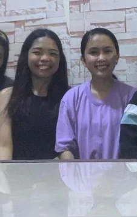
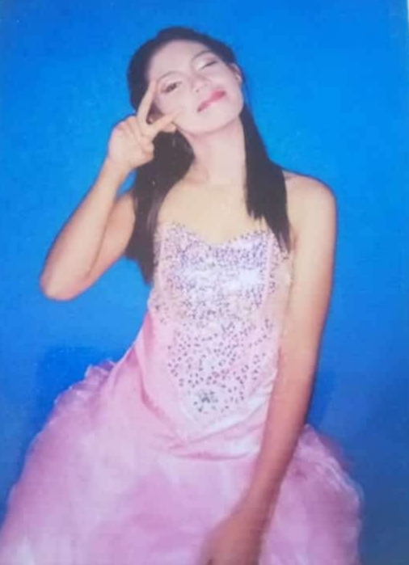
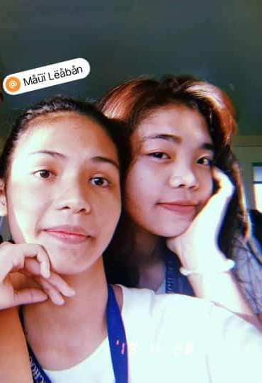
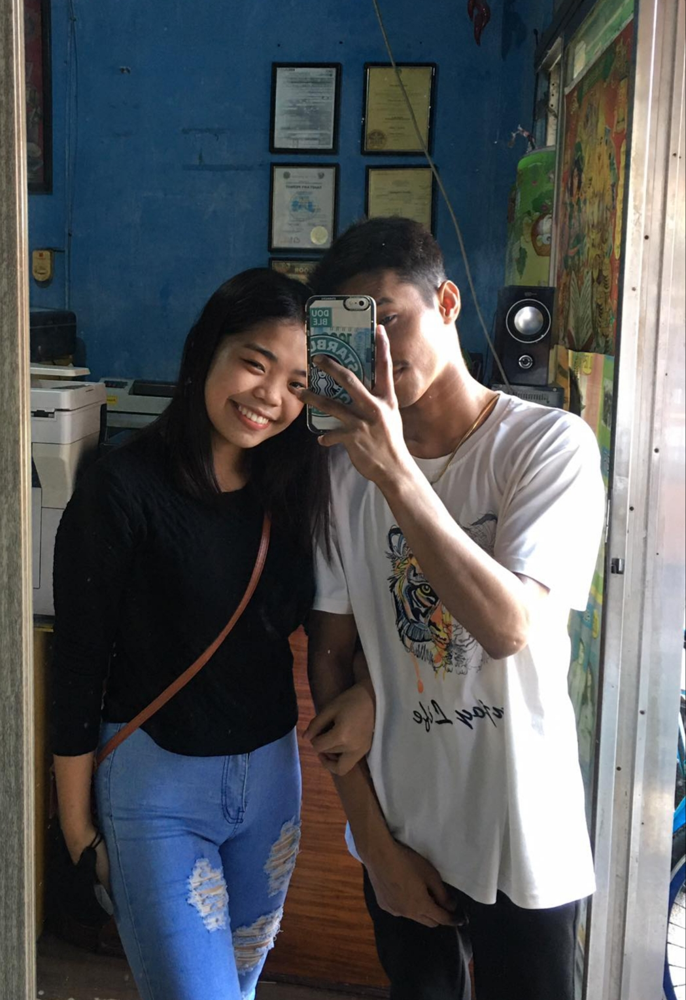
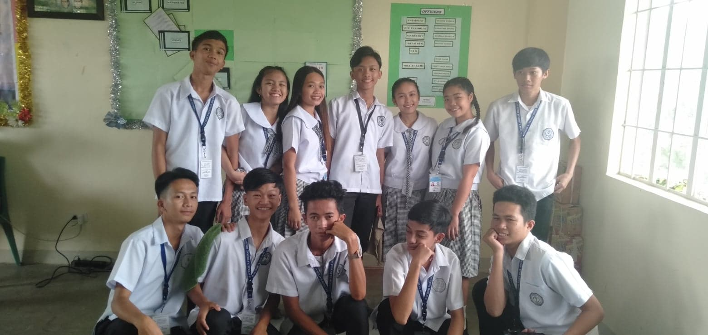

My Friends

Rouella Mae
This is my friend Rouella Mae, she has been my friend for 7 years.
We met when I was in the 9th grade, and since then we have been friends
and I always went to see them in Sineguelas where they were still living.
We go to school every 12nn in the afternoon, so i went to them as early as
9 am or 10 am because we can't spend a day without being together HAHAHAHAHAHA
and back to my story that i went to them early and he was just about to clean
their house and i helped her but all her wanted to do was just sit HAHAHAHAHA.
And the two of us also ate together with them and we went to school together
and even on the weekend i went to them sometimes to be with him, we developed a
great friendship and because of that i became comfortable with her and her knows
all my secrets and of course i know her secrets too. I have a lot of trust in her
because i know her will never criticize me because when we don't like something between
each other we say it and he never judges me for whatever my flaws are. And until the 10th grade,
we were in the same class. When he was with me, there wasn't a day that I wasn't happy.
And until now we are still friends but they have moved house and are in naic so I can't go
because i don't know how to travel alone so when i go i will be with our other friends and our
bonding is drinking alcohol because the only time we meet is that we make the most of our time
together and also because their house is far away.



Maui
This is my friend Maui and he has been my friend for 6 years. Our friendship started when i
was in the 10th grade and she was our classmate with rouella mae. And our first meeting was funny
because what happened was that I had to put a cover on my notebook and i went around to my classmates
to ask if they had any extra notebook covers and when I got to his seat I asked him if he had an extra
notebook cover and he said yes but it was his notebook cover and we and the rest of our classmates laughed
because of what he said and since then we have become friends. And I moved seats so I could be next to Rouella,
because our seats were arranged based on our last names and my seat was a bit far from them so I moved HAHAHAHAHA.
I love maui because she really makes me feel that we are the same and she always worries about me so my heart is very
happy because she treats me like her sister because she is the only child, and because every morning the when we go to
school, every time we go home, we go straight to their house and we also eat there together and after we finish eating,
we have done our assignments and activities and Rouella just chases after us to go to their house so that we can do our
work together. I am very happy when they are with me because I am very comfortable with them both. Because when Maui
notices something in me, he tells me right away. Not a day passed that I couldn't not be with them, so even though we went
to school in the morning, I still got home at 6pm. And because of the pandemic, our communication with Maui was cut off because
Rouella and I were blocked on fb. of his girlfriend, we sulked with Maui during those times because we didn't know what we had
done wrong to block us because before the pandemic we were fine and there was no fight between the three of us. That's how we found
out that the girlfriend blocked us because we had communication again this year in August and she apologized to us and we planned to
meet again but it didn't work out because my and Rouella's schedule didn't work scene because he is in college as well.

Mercil
This is Mercil, I only met him last year, because he was my co-worker at Black Pink 199 Samgyupsal near here in sm bacoor.
When I met mercil, I immediately felt comfortable with him because he was all light and fun to be with and that day he asked for my
name on fb and we became friends and that's when our friendship started. Even though I don't know him well, I feel comfortable with
him because he is also kind and because he is gay. Mercil was very caring
Sandara
Sandara Sangcajo
towards me so I fell in love with him. Because when we left
our jobs at Black Pink, we met again to look for another job and we ended up at Jollibee and that's where we applied and of course requirements
are needed before entering a job, I was just impressed because even though we hadn't been together or known each other for that long, he told me
that he would help me meet my requirements so that I could enter the job. And in 1 week we adjusted my requirements and that's when I got to know
him better and I liked him even more because he is caring and kind even with an attitude sometimes HAHAHAHAHA, actually one of the things I like
most about him is saying and he really shows what his true character is. And I really miss being with him HAHAHA because he's also busy with work so
we don''t see each other very much anymore. But until now we still say hello and support each other.

Troops
This is my circle of friends when I was in the 10th grade and the name of our group was Troops. We were only five girls in our group to avoid plastic friend HAHA and these are their names. First Lorie is kind, reliable, smart with a bit of attitude in a nice way. I met lorie when I was in grade 2 because we were in the same class and I didn't remember that until she showed me our class picture then and it's true HAHA and she's our national book store hehe because she's complete with things and she's easy borrow but the only thing he doesn't want is to lose his things and he also doesn't want you to take his things without asking for his permission but it's anyone's fault. Second is Christine, she is kind and considerate, she is fun to be with, especially when she is silly, and she is also smart and always reliable, and I met her when I was in grade 6 because we were in the same class and became a troop. Third is Rouella, she told her story. .Fourth is bella, bella is gay, I met him when I was in the 8th grade because he was my classmate with Reggie, very fun, with you, you will always laugh really dabest HAHAHA, he is also very kind. And the last one is me.
And our male friend is seven. First is Dabe, he is very smart, kind, reliable, it's also fun to be with Dabe and I only met him when I was in the 10th grade. Second is Monmon, I met him when I was in 9th grade because he was a classmate of Rouella and I, monmon was a joker in our troop, actually I had a crush on him from 9th grade until 10th grade, but until we were really in a troop. Third is Reggie, I met him when I was in 8th grade because he also became a classmate from 8th, 9th and 10th grade. He is happy with him. Fourth is Kuya Genie, he's quiet and smart too but he doesn't always get along when we go out because he has asthma but he's fun to be with. Fifth is Chingchong, he's Christine's ex hehe kind, naughty and he's good at pomurma and he's fun to be with. Sixth is Villarin, he's quiet, kind, obedient to his parents and a bit of a crybaby, but he's always fun to be with. Seventh is Raven, he's kind, a little drunk, but even so, he's happy he is there and reliable at all times, just call or chat with him and he will come right away but it also depends if he is not busy.
Actually our troop is happy and most of them are really smart and when there is a problem we have an open forum to discuss the problems properly with each other and I am happy because I got to know them and get along with everyone.